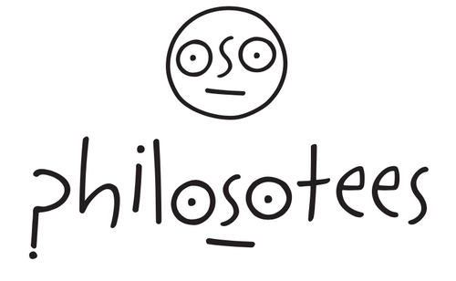
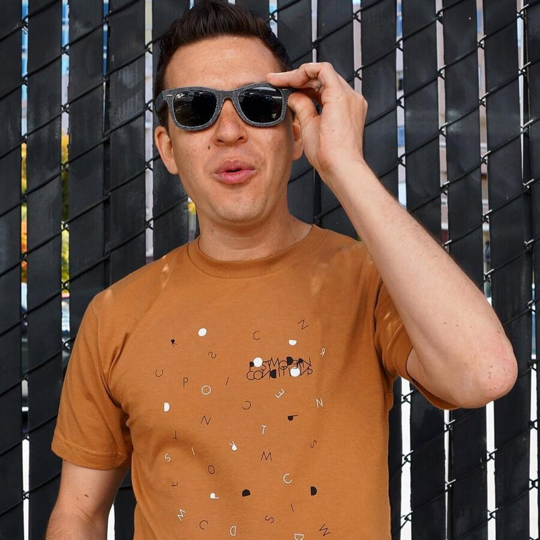
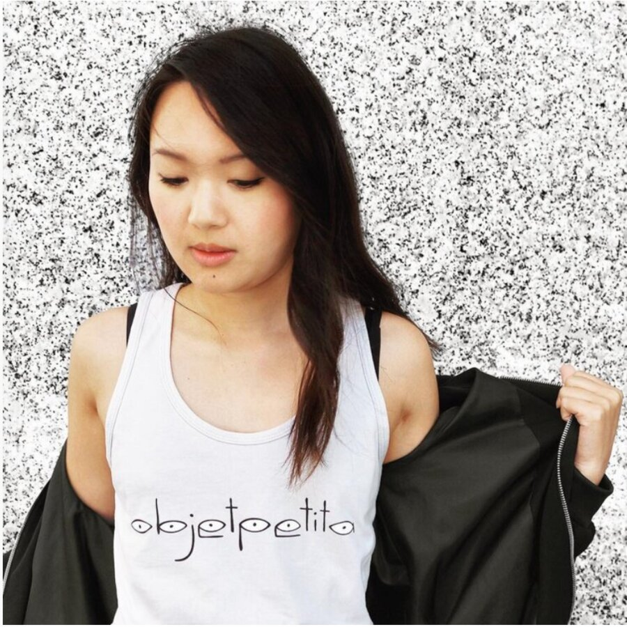
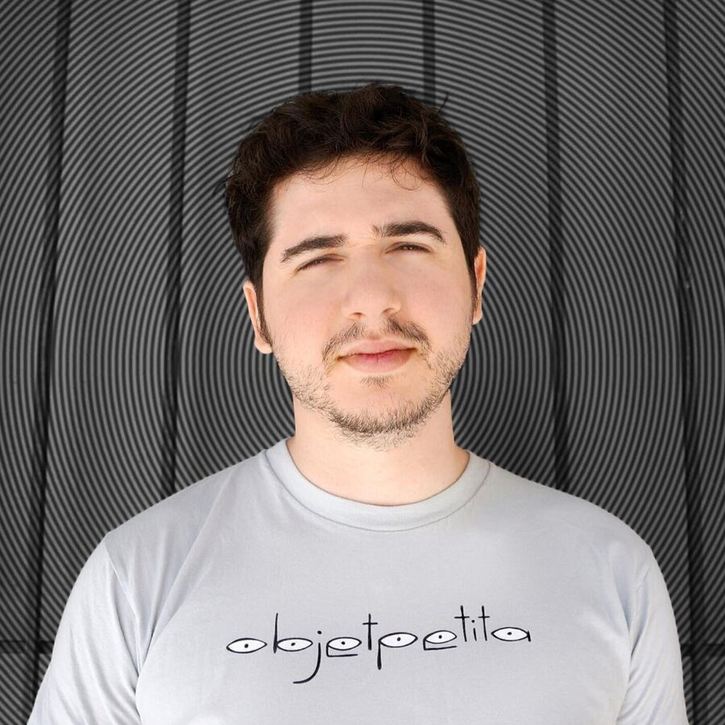

Ever since college, I've wanted to sell a line of philosophy-themed shirts. So one day I decided to just do it.
With zero regard for market demand, I opened a Shopify store and launched two designs: “Postmodern Conditions” celebrating the philosophy of Jean-Francois Lyotard and “objet petit a” for all those Jacques Lacan fanatics. I sold two. Ever.
But I'm still in love with the logo I designed. And one day the world will need a “Deus Sive Natura” tank top.



If you are unhappy with your Philosotees purchase for any reason, perhaps the reason you are unhappy is something deeper. Keep searching.
How should one Philosotee? — By instead asking “How could one Philosotee?”
What is the meaning of Philostees? — Imagine someone riding your bus, or sitting at a coffee shop, or in line at the DMV, and this someone is wearing a shirt referencing your favorite philosopher. Boom. Friendship. Amazing.
Is there life after Philosotees? — Yes. But there was no life before.
Is Philosotees all there is? — No. Philosotanks also exist.
Who created Philosotees? — The Loom from the movie Wanted featuring Angelina Jolie. Loom wanted to branch out from fatalistic wovens into simulacra and rhizomatic knits.
Who really created Philosotees? — Phil Sopher